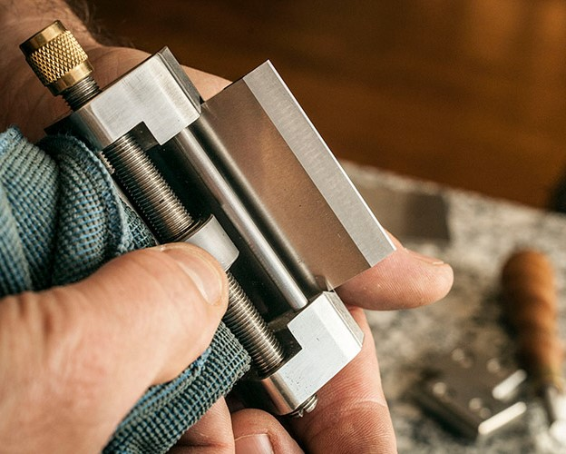

Even the best tools are of little use with a dull cutting edge. While
experts often debate over the best sharpening practices and equipment,
we recommend a simple, reliable method that produces a razor edge in
minutes.
We prefer manual sharpening on waterstones because it’s simple, fast,
safe, reliable, and with the right stones, it yields a sharpness quality
unmatched by any other method we’ve tried.
The items in this section will help you keep your blades perfectly
honed, bronze polished, iron rust-free, and your tools protected. With
proper care, Lie-Nielsen tools will serve you for a lifetime.